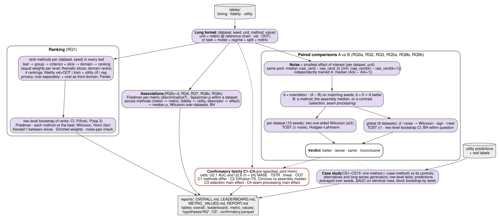

Figure 13 — Statistical analysis pipeline¶

File: fig13_statistical_pipeline.pdf
Suggested caption. From benchmark tables to conclusions. The long-format tables feed three analyses applied to every method: a ranking of every method in every slice, paired comparisons A vs B measured in units of an empirical noise level, and associations across methods. A pre-specified confirmatory family (C1–C4) is corrected jointly; a case study of one method is reported separately as secondary.
Steps¶
- Long format. One row per (dataset, seed, unit, method, value). A fidelity unit is a metric against one real reference (train, val, OOT); a utility unit is task × model × regime × split × metric (regime S = TSTR, R = TRTR).
- Ranking (RQ1). Methods are ranked within every leaf per (dataset, seed); ranks are averaged
leaf → group → criterion × slice → domain → ranking with equal weights per level. Four rankings,
each the mean of a fidelity domain (six criteria, without privacy) and a utility domain: fidelity
against val + OOT or against train × utility classification or regression (TSTR on val and OOT).
Privacy (F10) and cost are ranked separately; next to each ranking — the same ranking with cost
as a third domain and the Pareto front "rank × time"; each domain is also ranked on its own;
thematic slices (class balance, extremes) are reported alongside. Uncertainty: two-level
bootstrap of ranks (CI, probability of first place and top 3); Friedman test; every method
against the best by one-sided Wilcoxon with Holm (top tier); Kendall τ between slices; random
criterion weights; the two random paths of one pool must be indistinguishable (
mid,max). - Noise = smallest effect of interest per dataset and unit: on one pool, the median
|vae_rand − vae_rand_b| over seeds (in
min, withoutvae_rand_b, the median |vae_rand(seed k) − vae_rand(seed k+1)|); for an independently trained method A, the median |A(seed k) − A(seed k+1)|. - Paired comparisons (RQ0a, RQ2, RQ3, RQ5a, RQ8b, RQ9b): d = orientation · (A − B) on matching seeds, d > 0 ⇔ A better. B is a method, the median of all assembly methods of the pool, or a contrast (main effect of window selection, of seam processing).
- Per dataset (10 seeds): two one-sided Wilcoxon tests (α/2 each), TOST against ± noise, Hodges–Lehmann effect. Globally (9 datasets): effects in noise units, averaged over seeds; Wilcoxon, sign test, t-test, TOST ±1 noise unit, two-level bootstrap CI. Benjamini–Hochberg within a question.
- Verdict: better · worse · same (proven equivalence) · inconclusive.
- Associations (RQ0c–d, RQ4, RQ7, RQ8c, RQ9c): Friedman per metric (does it discriminate the methods beyond noise); Spearman ρ across methods within a dataset — metric ↔ metric, fidelity ↔ utility, dataset descriptor ↔ effect — then the median ρ and Wilcoxon over datasets, BH.
- Confirmatory family C1–C4: cells U2.1 (AUC) and U2.6 h = 24 (MASE), TSTR, linear model, OOT. C1 methods differ (Friedman); C2 Diffusion-TS and Chronos against the assembly median; C3 main effect of window selection; C4 main effect of seam processing. Joint Holm over the ten tests.
- Case study CS1–CS15 (secondary): one method (
--case-method) against its controls on the same pool, the alternative assemblies and the long-series generators; row-level tests average predictions over seeds and compare ΔAUC on identical test rows by a block bootstrap over weeks (test rows are autocorrelated, so per-seed DeLong tests would be anti-conservative).
Outputs¶
Reports in reports/: OVERALL.md, LEADERBOARD.md, METRIC_VALUES.md (values of the core fidelity metrics and the
primary utility metrics by reference, dataset, task, model and split), REPORT.md. Tables: overall/, leaderboard/,
metric_values/, hypotheses/RQ*_*.parquet, CS*_*.parquet, confirmatory.parquet. Source: HYPOTHESES.md,
marathonts/hypotheses/overall.py, marathonts/hypotheses/leaderboard.py, marathonts/hypotheses/metric_values.py,
marathonts/hypotheses/questions.py, marathonts/hypotheses/engine.py, marathonts/hypotheses/stats.py.